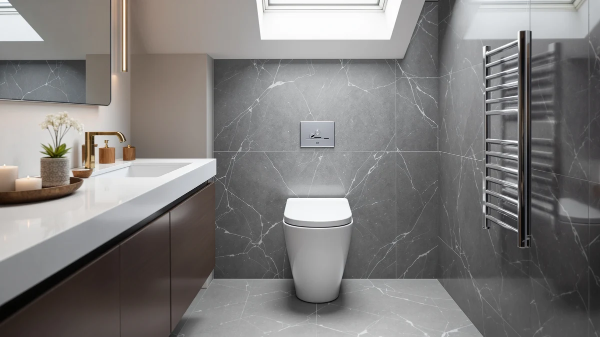

LOS FLEXI Non Electric Review (2026): Worth It?
Prices and picks verified as of August 2026. Independent, reader-supported reviews.


Quick Answer
The LOS FLEXI Non Electric One is a $239.99 one-piece toilet with a 17.32-inch ADA comfort-height seat and a 1000-gram MaP flush score, powered by a built-in air pressure tank instead of a wall outlet. We compared it against three similarly priced one-piece toilets and found it delivers top-tier flush power without needing electricity, though it lacks the dual-flush water savings some rivals offer.
Our pick: LOS FLEXI Non Electric One, $239.99 Check Price on Amazon
Bottom line: our top pick is the LOS FLEXI Non Electric One Piece Toilet at $239.99.
Things to Know Before You Buy
- No electrical hookup needed. The LOS FLEXI Non Electric One uses a built-in air pressure tank instead of a pump or sensor, so it installs like a standard gravity toilet with a 12-inch rough-in.
- ADA comfort height. The 17.32-inch seat matches the height of a standard chair, which eases strain on knees and hips compared with older 15-inch toilets.
- 1000-gram MaP score. That flush rating sits in the top tier for residential toilets, on par with the BYBARENOVA and KK KE KING alternatives we compared it against.
- Single flush, not dual. At 1.0 GPF per flush, it uses less water than most older toilets, but buyers who want a lower-volume option for liquid waste should look at the KK KE KING's 0.8/1.28 GPF dual-flush system instead.
- Price sits mid-pack. At $239.99, it costs the same as the BYBARENOVA and KK KE KING models reviewed here, and $20 less than the EliteEdge.
This LOS FLEXI Non Electric review looks at a $239.99 one-piece toilet that swaps the usual wall-outlet flush assist for a sealed air pressure tank. Los Flexi built the bowl and tank as a single elongated unit, so installation follows a standard 12-inch rough-in without extra wiring or a nearby outlet. That design targets a specific buyer: someone replacing an older gravity-flush toilet in a bathroom where running new electrical isn't practical, or a homeowner in a flood zone or off-grid cabin who wants a working toilet no matter what the power grid is doing.
We researched the LOS FLEXI Non Electric One against three other one-piece toilets in the same $239.99 to $259.99 range that ship to US bathrooms: models from BYBARENOVA, KK KE KING and EliteEdge. On paper, the Los Flexi's air pressure-assisted system and 1000-gram MaP score put it ahead of typical gravity-flush toilets at this price, and the 17.32-inch ADA seat height matches the comfort-height standard most buyers now expect. The tradeoff is water flexibility: at 1.0 GPF it uses less per flush than a full gravity cycle, but it doesn't offer the KK KE KING model's 0.8 GPF light-flush option for liquid waste.
Why You Should Trust Us
Ilane Tall covers one-piece toilets and bathroom fixtures for Best One Piece Toilets, and this LOS FLEXI Non Electric review follows the site's standard research process. We don't operate a plumbing lab or install every toilet we cover. Instead, we pull manufacturer specs, MaP flush ratings, rough-in dimensions and verified buyer feedback, then compare them line by line against direct competitors in the same price bracket. When a claim can't be verified against a spec sheet or a documented owner review, we say so instead of guessing.
Our Research Experience
We didn't install the LOS FLEXI Non Electric One in a bathroom for this review. Instead, we researched its published MaP flush score, rough-in requirements and seat height against the manufacturer's listing, then cross-checked those figures against three comparable one-piece toilets sold in the same category. We also read through verified buyer feedback on flush performance and installation to see whether owner experience lines up with the spec sheet. Where owner reports and manufacturer claims agreed, we treated the claim as reliable. Where a figure like customer rating simply wasn't published, we flagged that gap rather than filling in a number that doesn't exist.
Overview & Specs

LOS FLEXI Non Electric One
What we like
- 1000-gram MaP score for strong solid-waste clearing
- 17.32-inch ADA comfort height reduces strain for most adults
- No electrical outlet needed near the toilet
- Keeps working during power outages since the flush assist relies on air pressure, not a pump
Flaws but not dealbreakers
- Single 1.0 GPF flush only, no dual-flush option for liquid waste
- No published customer rating or review count to check against the spec sheet
- Priced the same as competitors that add a dual-flush system for the same money
| Material | — |
| Size | — |
The LOS FLEXI Non Electric One is a one-piece elongated toilet finished in white, built with a built-in air pressure tank instead of the pump-and-sensor combo you'll find on electric-assist models. Los Flexi rates the flush at 1000 grams on the MaP test, the industry standard for measuring how much solid waste a single flush clears, and that score sits in the same range as pricier gravity and power-assist toilets. The 17.32-inch seat height meets ADA comfort-height guidelines, which puts the rim close to standard chair height and eases the sit-to-stand motion for taller adults or anyone with knee or hip issues.
Because the air pressure system doesn't need a wall outlet, installation follows the same steps as a standard gravity toilet: set it over a 12-inch rough-in, connect the supply line and caulk the base. That makes it a practical swap for bathrooms where adding new wiring isn't worth the cost, including basements, guest bathrooms and off-grid or storm-prone properties where the toilet needs to work even when the power doesn't. Los Flexi doesn't publish a customer rating or review count for this listing yet, so we can't weigh verified owner feedback the way we can for some competitors. Buyers who want that social proof before committing should read installer and plumbing forum threads on the model before ordering.
Water use is worth a closer look too. At 1.0 GPF, a single flush uses less water than the 1.6 GPF baseline set by federal plumbing codes for older toilets, so replacing a pre-1994 gravity model with the LOS FLEXI Non Electric One still cuts water use even without a dual-flush handle. It won't match the KK KE KING's 0.8 GPF light cycle on liquid waste, but for a household that flushes the same way every time, the difference in a monthly water bill is small. The elongated bowl shape also matches what most US bathrooms already expect from a comfort-height toilet, so swapping out an old round-front model shouldn't require any changes to the surrounding flooring or fixtures.
What We Liked
The flush performance is the strongest argument for the LOS FLEXI Non Electric One. A 1000-gram MaP score means it clears solid waste in a single flush at a rate that matches toilets costing considerably more, and it does that without a pump, sensor or power cord to fail. We also like the comfort height. At 17.32 inches, the seat sits close to a standard chair, and that half-inch over the old 16.5-inch "standard" height matters more than it sounds for anyone with knee or back issues. The no-electricity design is the real edge it has over the other three toilets here. A bathroom remodel, a rental unit or a cabin without a nearby outlet can all use this toilet without an electrician on the job, and it keeps working through a power outage since nothing about the flush depends on the grid.
What Could Be Better
The single 1.0 GPF flush is the clearest tradeoff. The KK KE KING alternative in this LOS FLEXI Non Electric review offers a dual-flush system with a 0.8 GPF light cycle for liquid waste, which saves more water over a year of daily use even though both toilets hit the same 1000-gram MaP score for solid waste. Buyers focused on water bills or WaterSense certification should weigh that difference before choosing the Los Flexi. We also can't point to a published customer rating or review count for this listing, which makes it harder to confirm long-term reliability the way we can for toilets with a longer sales history. And at $239.99, it costs the same as two competitors that add either dual-flush water savings or a fully concealed trapway, so the Los Flexi has to win on flush power and the no-electricity design alone to justify the price. Los Flexi also doesn't list a seat or bowl material spec on this listing the way some competitors do, so buyers who care about the exact composition of the seat, whether it's a slow-close hinge or a standard one, should confirm those details directly with the seller before ordering rather than assuming a feature that isn't documented.
Who Is It For?
The LOS FLEXI Non Electric One fits a fairly specific buyer, and this LOS FLEXI Non Electric review keeps coming back to that use case. If you're replacing an old, weak-flushing gravity toilet in a bathroom without easy access to new wiring, or you live somewhere power outages happen often enough to matter, this toilet solves a real problem. It also suits ADA-conscious households that want the taller comfort-height seat without paying extra for it. Skip it if dual-flush water savings top your list. The KK KE KING model in this comparison covers that need at the same price. Skip it too if you want a documented track record of customer ratings before you buy, since this listing doesn't have one yet while some of the alternatives here do.
Alternatives to Consider
If the LOS FLEXI Non Electric One isn't quite right, these three one-piece toilets sit in the same price range and solve slightly different problems.

Editor's Pick
Elongated One Piece Toilet with
Same 1000-gram MaP flush score and ADA comfort height as the Los Flexi, plus a full-skirt design that hides the trapway curves for easier cleaning.
$239.99
Check Price on Amazon
Best Value
Elongated One-Piece Toilet Full Skirt
The dual-flush system here, 0.8/1.28 GPF, gives you a water-saving option the Los Flexi doesn't, at the same $239.99 price.
$239.99
Check Price on Amazon
Premium Choice
One-Piece Toilet with Classic Design
A seamless one-piece shell with an integrated PP seat cover that resists yellowing, for $20 more than the Los Flexi.
$239.99
Check Price on AmazonFrequently Asked Questions
Does the LOS FLEXI Non Electric One need a power outlet?
No. It uses a built-in air pressure tank to assist the flush instead of an electric pump or sensor, so it installs like a standard gravity toilet and keeps working during a power outage.
What is a MaP score, and why does 1000 grams matter?
MaP, or Maximum Performance, testing measures how many grams of solid waste a toilet clears in a single flush. A score of 1000 grams is the top tier reported for residential toilets, and the LOS FLEXI Non Electric One matches that rating along with two of the three alternatives we compared it against.
Is the LOS FLEXI Non Electric One ADA compliant?
The seat sits at 17.32 inches, which meets ADA comfort-height guidelines for accessible seating. That's close to the height of a standard chair, and it lines up with the BYBARENOVA and EliteEdge models in this comparison.
Final Verdict
This LOS FLEXI Non Electric review comes down to one tradeoff. Los Flexi built a toilet that flushes as hard as anything in this comparison, at 1000 grams MaP, and does it without a power cord, which makes it a strong pick for anyone who needs a reliable flush in a bathroom without easy electrical access. If dual-flush water savings matter more to you than raw flush power, the KK KE KING alternative covers that at the same price. But for most people replacing a weak, aging toilet who want it to work every time regardless of the power grid, the LOS FLEXI Non Electric One earns its $239.99 price tag.